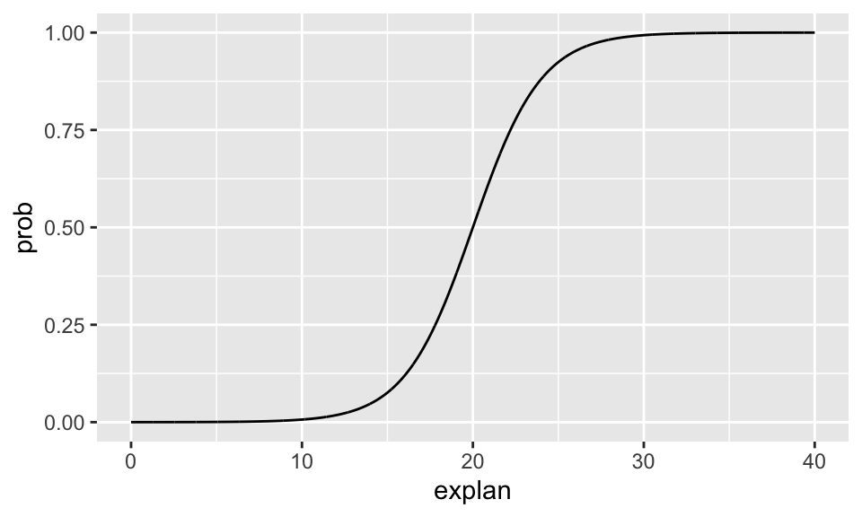

shuttle <- read_csv("~/Dropbox/teaching/MA150/PracStatCD/Data Sets/Chapter 07/CSV Files/C7 Shuttle.csv",
na="*")
# new names that make the data easier to work with:
# mine loads with an empty 5th column
# so I had to give the 5th column a name, also.
names(shuttle) <- c("flight", "date", "temp", "launch", "X5")
# remove the row that has a missing value for launch
# also create a character variable for success
shuttle <- shuttle %>%
filter(!is.na(launch)) %>%
mutate(launchsucc = as.factor(ifelse(launch == 1, "success", "failure")))Math 150 - Methods in Biostatistics - Homework 4
Assignment Summary (Goals)
- fluent use of the logistic model for prediction and for coefficient interpretation
- practice using
ggplot()so that visualizations can inform the larger analysis
Note that if you don’t know the R code either check my notes or ask me!!! Happy to scaffold, debug, send resources, etc. Don’t go down a rabbit hole trying to figure out an R function or syntax.
Also, note that you’ll need to get the data from Sakai and use it for this analysis. Look back to your own HW1 file to see the line of code you used to import the games1.csv dataset. Ask me if it isn’t obvious to you after you look at your own HW1.
Q1. Collaborative Learning
Describe one thing you learned from someone (a fellow student or mentor) in our class this week (it could be: content, logistical help, background material, R information, etc.) 1-3 sentences.
Q2. Chp 7, A1
Based on the description of the Challenger disaster O-ring concerns, identify which variable in the Shuttle data set in Table 7.1 should be the explanatory variable and which should be the response variable.
Q3. Chp 7, A2
Imagine you were an engineer working for Thiokol Corporation prior to January 1986. Create a few graphs of the data in Table 7.1. Is it obvious that temperature is related to the success of the O-rings? Submit any charts or graphs you have created that show a potential relationship between temperature and O-ring damage.
note: the data is coded with missing values represented by *. You may need to account for that. See how I did it below using na="*". Again, ask me if you are having trouble!
note on graphs: if you tell me the type of graph you want, and you don’t know how to make it, ask me and I’ll send you code! Remember, your response is binary and your explanatory variable is continuous.
note on data: in order to get the assignment to work, you’ll need the data. Import it into the folder where the HW .Rmd file lives. Try not to use your downloads for everything!!
Q4. Chp 7, A3
Use the data in Table 7.1 to create a scatterplot with a least squares regression line for the space shuttle data. Calculate the predicted response values (\(\hat{y} = b_0 + b_1 x\)) when the temperature is 60F and when the temperature is 85F.
Q5. Chp 7, A4
Solve Equation (7.5) for \(\pi_i\) to show that Equation (7.6) is true. Note that your text uses \(\pi_i\) to represent the true model (akin to \(p_i\) that has been used in class). The difference is only in notation, not in meaning.
Q6. Chp 7, A5
Use Equation (7.6) to create twelve graphs: In each graph plot the explanatory variable (x) versus the expected probability of success (\(p_i\)) using the following values:
| 1 | 2 | 3 | 4 | 5 | 6 | 7 | 8 | 9 | 10 | 11 | 12 | |
|---|---|---|---|---|---|---|---|---|---|---|---|---|
| \(\beta_0\) | -10 | -10 | -10 | -5 | -5 | -5 | 10 | 10 | 10 | 5 | 5 | 5 |
| \(\beta_1\) | 0.5 | 1 | 1.5 | 0.5 | 1 | 1.5 | -0.5 | -1 | -1.5 | -0.5 | -1 | -1.5 |
Do not submit the graphs, but explain the impact of changing \(\beta_0\) and \(\beta_1\).
For all of the graphs, at what value of \(\pi\) does there appear to be the steepest slope?
I wrote the R code for you (hopefully you can follow along with what it is doing). All you need to do for this problem is change the parameter values and look at the graph. Do not include all the graphs in your assignment, just answer the questions based on your observations.
#set the parameters
beta0 <- -10
beta1 <- 0.5
valuesofX <- seq(0, 40, by=0.01) # create a vector of X values
probfunc <- function(b0, b1, ex){
exp(b0 + b1*ex) / (1 + exp(b0 + b1*ex))
}
valuesofY <- probfunc(beta0, beta1, valuesofX)
datatoplot <- data.frame(explan = valuesofX, prob = valuesofY)
ggplot(datatoplot) +
geom_line(aes(x = explan, y = prob))
Q7. Chp 7, A6
[For the shuttle data:] Use statistical software to calculate the maximum likelihood estimates of \(\beta_0\) and \(\beta_1\). Compare the maximum likelihood estimates to the least squares estimates in A3. Use glm(response ~ explanatory, family = "binomial", data = yourdataset) %>% tidy().
Q8. Chp 7, A7
Use Equation (7.9) to predict the probability that a launch has no O-ring damage when the temperature is 31F, 50F, and 75F.
Q9. Chp 7, A8
Calculate the odds of a launch with no O-ring damage when the temperature is 60F and when the temperature is 70F.
Q10. Chp 7, A9
For the shuttle model above, when \(x_i\) increases by 10, state in terms of \(e^{b_1}\) how much you would expect the odds to change. (Here you are calculating the odds ratio for an increase in 10 degrees.)
Q11. Chp 7, A10
The difference between the odds of success at 60F and 59F is about 0.3285 - 0.2605 = 0.068. Would you expect the difference between the odds at 52F and 51F to also be about 0.068? Explain why or why not.
Q12. Chp 7, A11
Create a plot of two prediction models (one logistic, one linear). Plot temperature versus the estimated probability using maximum likelihood estimates from A6, and plot temperature versus the estimated probability using the least squares estimates from A3.
R code:
Step1. Look up at probfunc() above. Write a very similar function that is linear instead. Give it a different name.
Step2. Using the two sets of coefficients (one from the linear and one from the logistic), predict the “y” value for both models for a vector of possible explanatory variables (e.g., valuesofX <- seq(50,85,by=0.01)). You should have two different vectors of predictions (and the vector of X, the explanatory variable).
Step3. Create a data.frame() with three columns. Let’s say you call it mypredictons. The ggplot code will look like this. Have fun with coloring the plot or changing the line types or something!
ggplot(shuttle) +
geom_point(aes(x = temp, y = launch)) +
geom_line(data = mypredictions, aes(x = valuesofX, y = yourlinearpreds)) +
geom_line(data = mypredictions, aes(x = valuesofX, y = yourlogisticpreds))praise()[1] "You are unreal!"